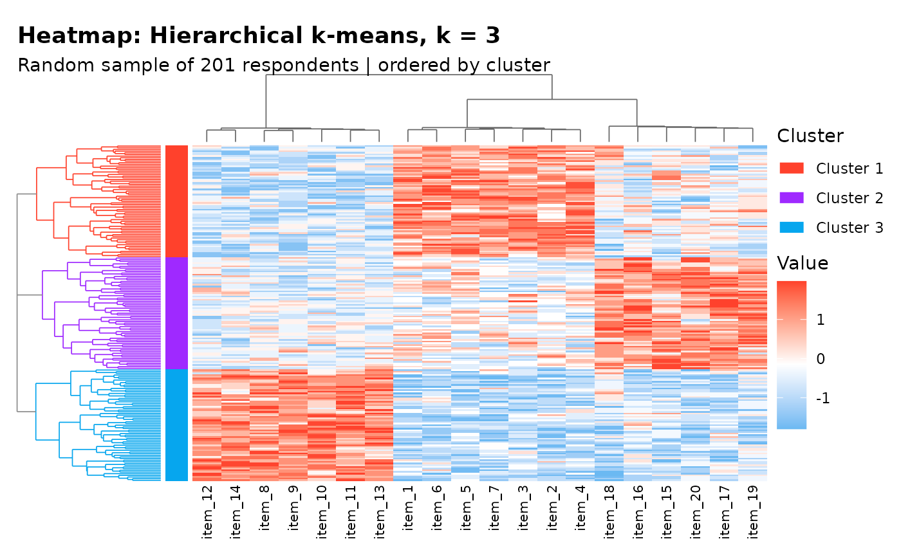

Simulated survey data with three well separated segments, used to
illustrate the segmentation functions (seg_) on data with a known,
clear cluster structure. In contrast, the attitude items of
sm_synthetic show only a weak cluster structure, which is
typical for real survey data.
Format
sim_segments
A data frame (haven-labelled) with 600 rows and 22 columns:
- id
unique identifier for each respondent, starting from 1
- segment
true segment membership (1: Segment A, 2: Segment B, 3: Segment C), 200 respondents each
- item_1, ..., item_20
simulated rating items (1: Strongly disagree - 10: Strongly agree); items 1-7 are high in segment A, items 8-14 in segment B and items 15-20 in segment C
Details
The data was generated as follows (see data-raw/sim_segments.R): each of
the three segments of 200 respondents has a mean profile on the 20 rating
items, scoring high (8) on its "own" block of items and low to medium
(3 to 5) on the others. Normally distributed noise (SD = 1.5) was added,
and the values were rounded and restricted to the rating scale from 1 to
10.
| Segment | Items 1-7 | Items 8-14 | Items 15-20 |
| A | 8 | 3 | 5 |
| B | 3 | 8 | 4 |
| C | 5 | 4 | 8 |
A cluster analysis on the 20 items should recover the three segments, which
can be checked against the true segment membership (segment).
Examples
# \donttest{
prep <- seg_prep_data(
sim_segments,
vars = dplyr::starts_with("item_"),
id = "id",
verbose = FALSE
)
cl <- seg_cluster(prep, k = 3, verbose = FALSE)
table(cluster = cl$cluster, segment = cl$data_full$segment)
#> segment
#> cluster 1 2 3
#> 1 200 0 0
#> 2 0 0 200
#> 3 0 200 0
cl$plots$heatmap

# }